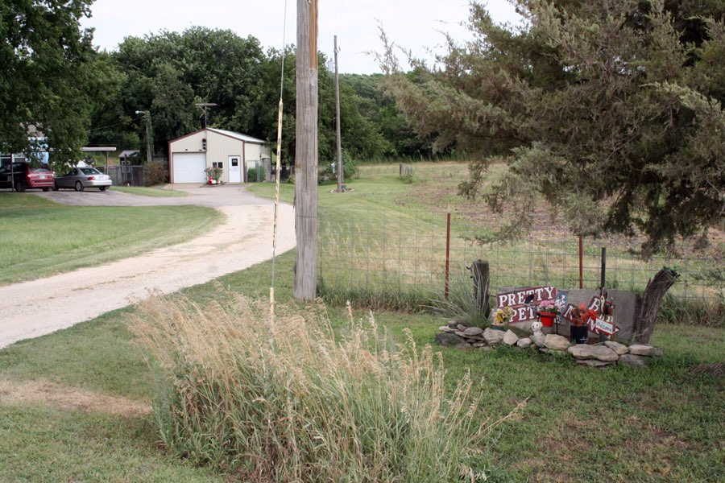
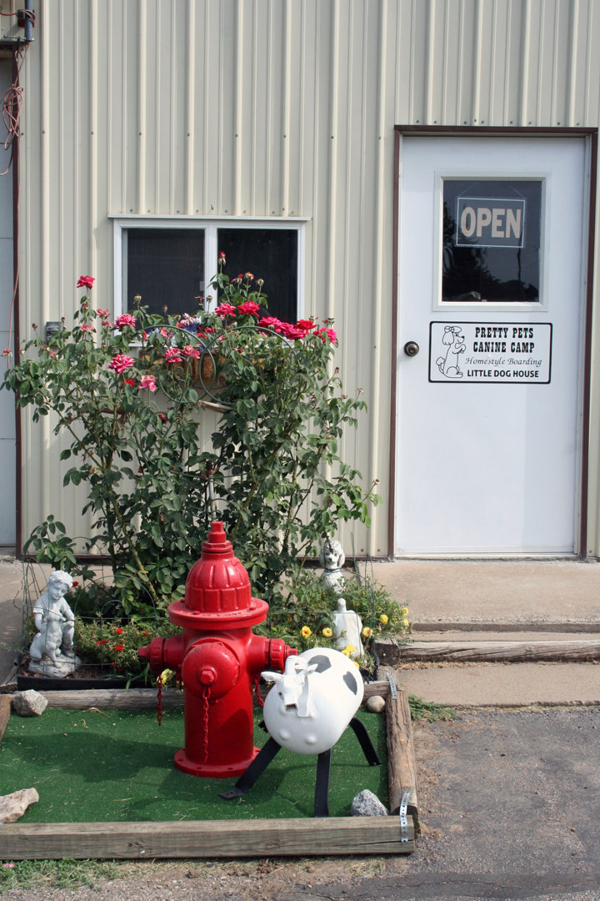
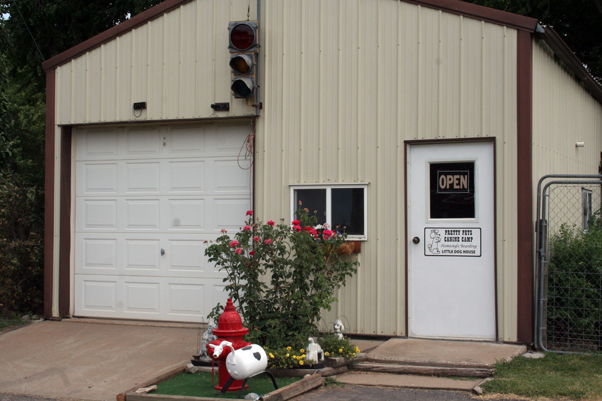
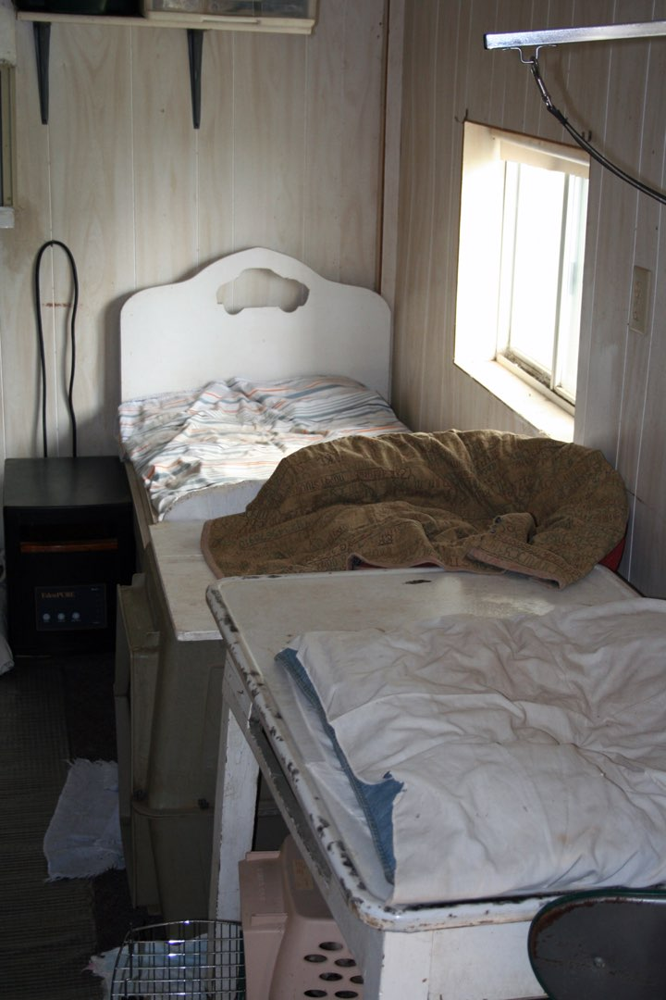
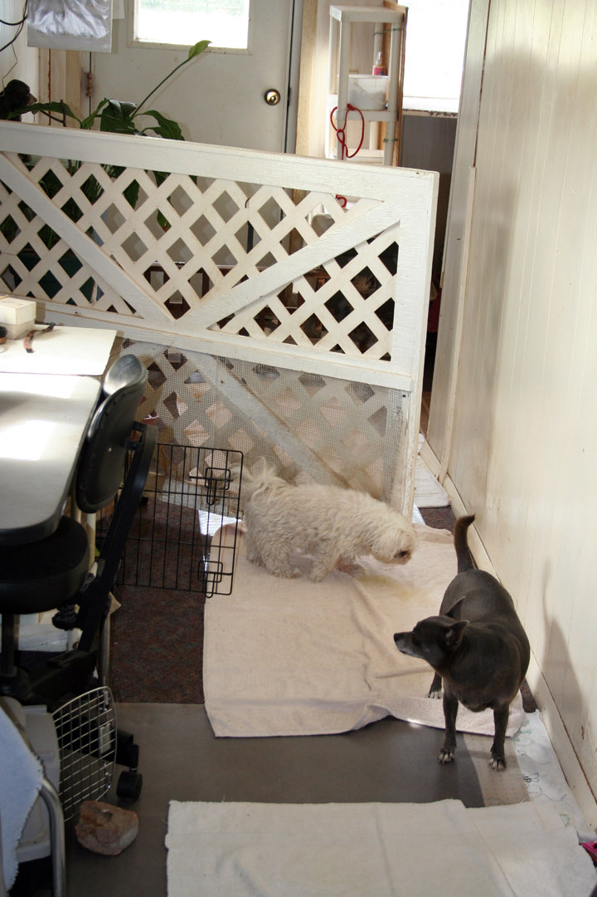
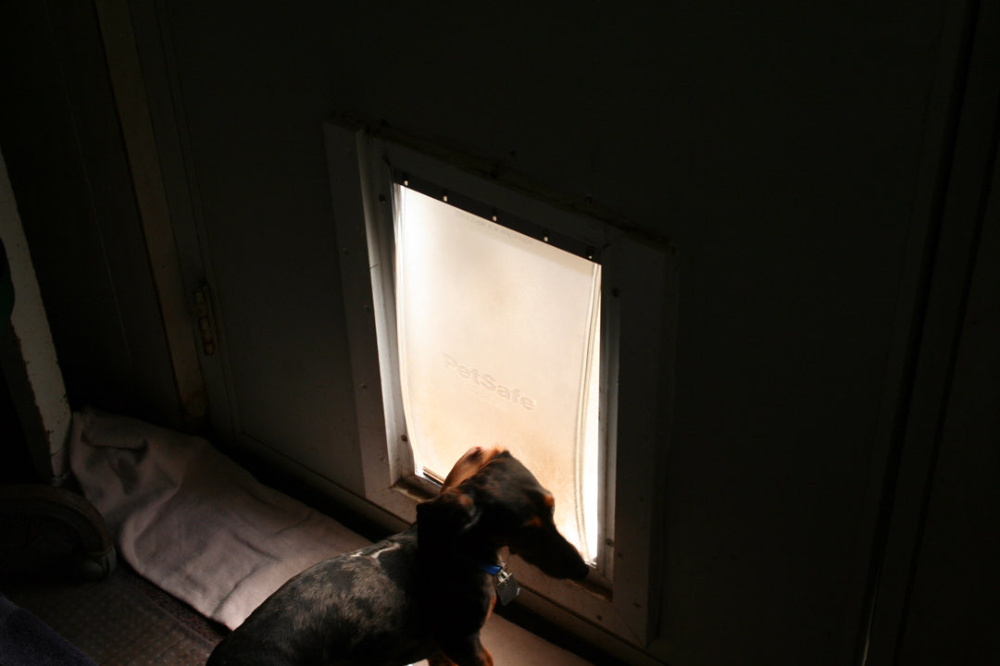
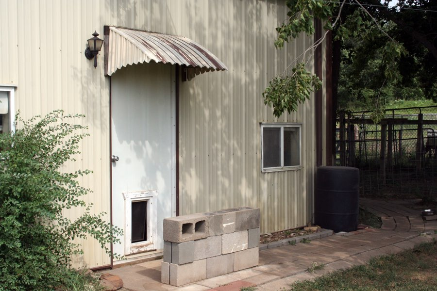
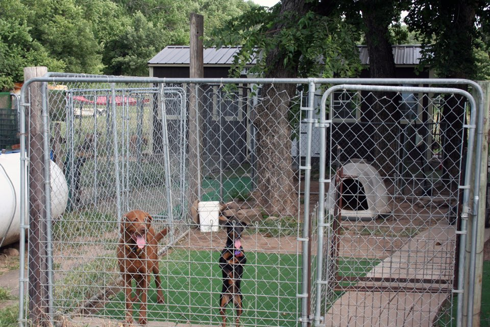
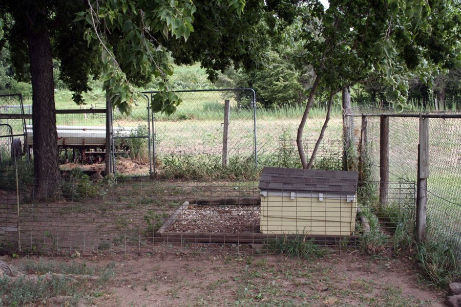
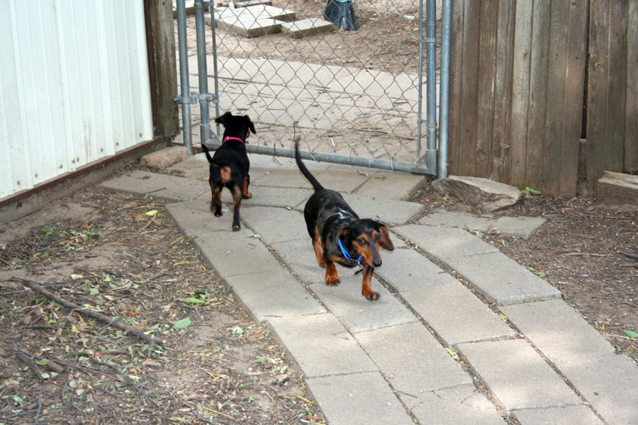

Pull in
Off East Schippel Road
A drive leads in from the road, past the grass and the big shade trees, to the camp buildings.


Tour the camp
Six stops around Pretty Pets Canine Camp, from the drive off E Schippel Road to the yard out back, all in the camp's own photos. Questions? The answers are further down.

Pull in
A drive leads in from the road, past the grass and the big shade trees, to the camp buildings.

Say hello
Look for the cream building with the white garage door, the rose bush and the red fire hydrant. The sign on the door reads "Homestyle Boarding – Little Dog House".


Settle in
Inside are little suite areas with A/C, fans, food and water. Some rooms have real beds with headboards, others soft bedding behind white lattice gates.


Head outside
Dog doors lead from the rooms straight out to the fenced runs, so guests can step out into the fresh air.


Big dogs
The brown cabin with the white double doors sits between chain-link runs, several of them floored with green turf and shaded by big trees.

Play
A good-sized fenced yard with grass, trees and stone paths between the runs.


Good to know
Anything not covered here? Nancy is a phone call away at (785) 825-2598.
Pretty Pets is open every day of the week, 7 AM to 9 PM. Call (785) 825-2598 to set up your drop-off and pick-up.
Yes. There is a Big Dog House as well as a Little Dog House. Customers have boarded German Shepherds and German Shorthaired Pointers here, along with small breeds like Shih Tzus.
Several customers mention that Nancy took their dogs on short notice. Space varies, so call (785) 825-2598 to check.
Yes. Reviewers have boarded two and three dogs at a time, from big dogs to little ones.
From a single weekend to much longer: one customer boarded her dog for two months, another brought three dogs for nine days.
Rates aren't listed online, so call for a quote. Customers describe the prices as "a great value", "reasonable" and "affordable".
2147 E Schippel Rd, Salina, KS 67401, on the east side of town. The car park is wheelchair-accessible.
Open every day, 7 AM to 9 PM.